Meet the Research Team
One of my favorite parts about acaedmia is mentoring undergraduate students, and watching them learn and thrive in a research environment. My completed and on-going projects would not be possible without the dedicated, driven undergraduate students I am lucky enough to work alongside with.

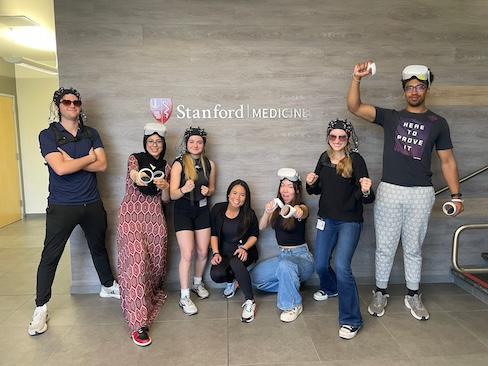
Lily Raaka
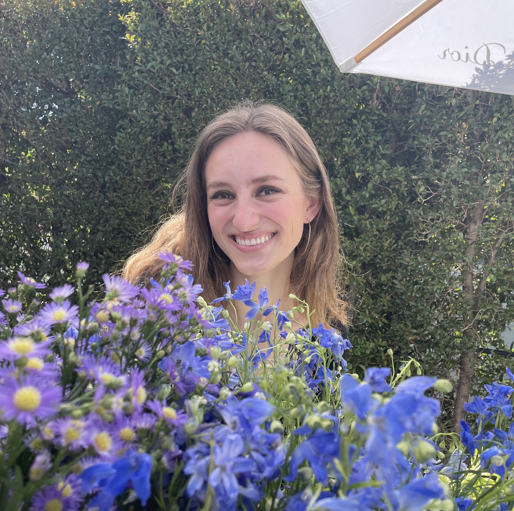- Major in Mathematics with a Minor in East Asian Studies China subplan, and pursuing a Masters in Management Science and Engineering at Stanford University.
- Lily loves listening to music, running, trying/cooking new food, is a Stanford Tour Guide and a member of the sorority Delta Delta Delta.
Ryan Southward
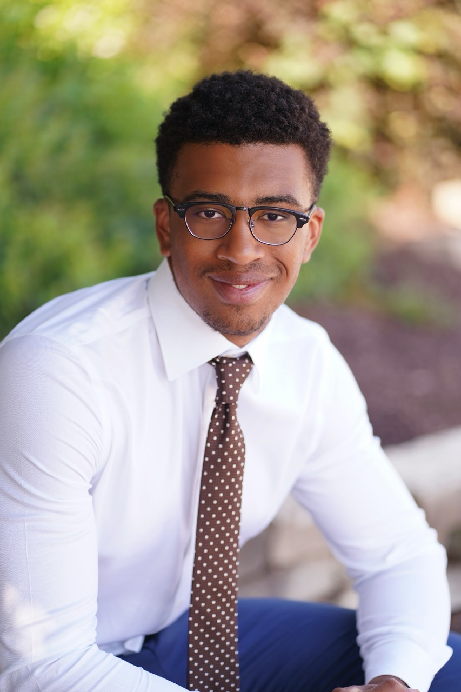- Major in Symbolic Systems with a Neuroscience Concentration at Stanford University.
- Ryan is a Chicago native, loves skiing and playing madden NFL football, and is a member in the Stanford Society of Black Scientists and Engineers.
Noor Hassan
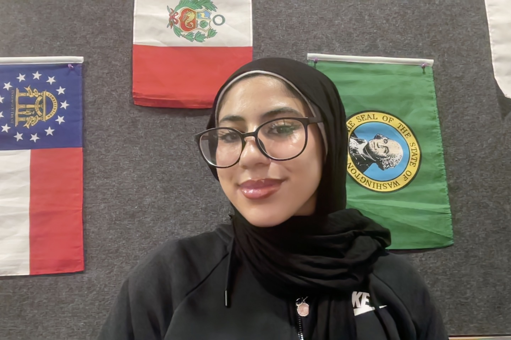- Dual Major in Symbolic Systems with a Neuroscience Concentration and Human Biology with an Epidemiological Concentration at Stanford University.
- Noor is a New Jersey native, loves the luxury lifestyle of eating out with her friends multiple times throughout the day and is the Community Building Director of the Muslim Student Union.
- She was awarded and completed a $7500 Wu Tsai Neurosciences Institute NeURO Fellowship in the lab.
Michelle Buyan
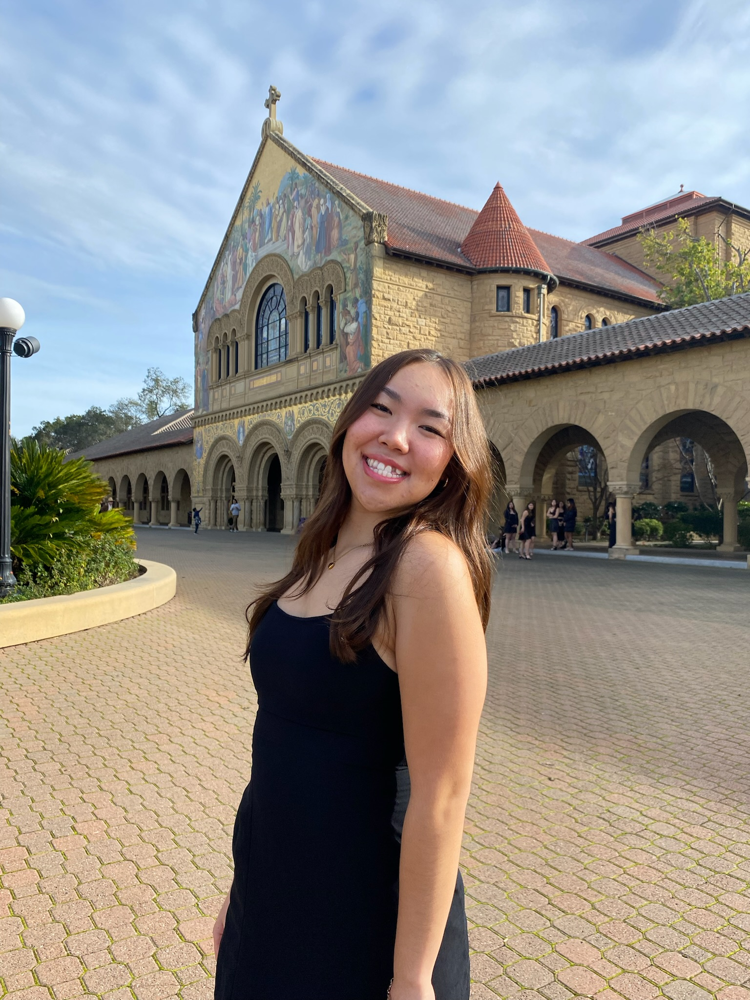- Major in Symbolic Systems with a Decision Making and Rationality Concentration at Stanford University.
- Michelle loves going to the gym, doing puzzles, dabbles in photography, is the Director of Communications for Stanford Women in Engineering and a member of the sorority alpha Kappa Delta Phi.
Selena Niemi
- Major in Human Biology with a Concentration in the Neuroscience of Human Behavior and Development at Stanford University.
- Selena is a first-generation college student, loves running, reading, binge watching old sitcoms, and is a member of Stanford's Women’s Club Basketball, Women in Medicine, and the Kappa Kappa Gamma sorority.
Eli Wandless
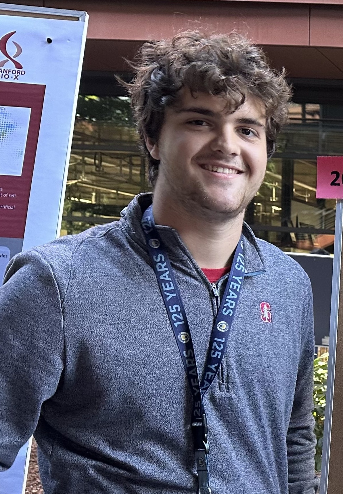- Major in Symbolic Systems with a Concentration in Neuroscience at Stanford University.
- Eli loves watching and playing soccer, spending time outside with his friends, and was accepted into the 2024 Studying Abroad Program in Madrid to immerse in Spanish culture and learning the language.
- He was awarded and completed a $7500 Bio-X Undergraduate Summer Research Fellowship in the lab.
Where are they now?
Olivia Brand

- Liv graduated with a Major in Biological Sciences, a Minor in Biomedical Engineering, and with Honors after completing the Biological Sciences Honors Research Program in the lab at Carnegie Mellon University.
- She was accepted into The State University of New York’s Upstate Medical University Program to pursue her M.D. in Syracuse, NY.
- Liv was an RA in Cassie's Army for 3 years from 2020 until she graduated in 2023, co-authored 1 conference publication, 3 conference talks, 1 poster, and first-authored a conference talk and poster: 1st Place Awardee both University-Wide and College-Wide Sigma Xi Presentation Competition CMU Meeting of the Minds Symposium; Elizabeth W. Jones Awardee for Excellence in Experimental Computational Biology.
Melissa Pocsai

- Melissa graduated with a Major in Psychology at the University of Pittsburgh.
- She was accepted into The City University of New York’s Clinical Psychology Ph.D. Program in NYC.
- During her time in Cassie's Army, Melissa co-authored 1 publication, 2 conference publications, 2 talks, 5 posters (SRCD, CogSci, SfN, ABRCMS, ISDP), and first-authored a poster at The Eberly Center for Teaching Excellence and Educational Innovation’s Teaching and Learning Summit.
Camila Bodden
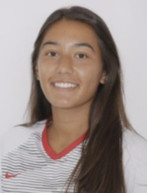- Cami graduated with a Major in Biology and a Minor in Spanish at Carnegie Mellon University.
- She was accepted into the Master's Biomedical Engineering Graduate Program at Carnegie Mellon University and currently works at Harvard University as a researcher in the Chemical & Chemical Biology Department in Cambridge, MA.
- Cami was an RA in Cassie's Army for 3 years from 2021 until she graduated in 2023, was a $2000 Small Undergraduate Research Crosswalk Funding Grant Awardee, co-authored a paper symposium at the JPS Conference and 2 poster presentations.
Dominic Calkosz

- Dom graduated with a Major in Computer Science and a Minor in Game Design at Carnegie Mellon University.
- He currently works as a Senior Game Designer at Blizzard Entertainment in Irvine, CA.
- Dom was an RA in Cassie's Army for 4 years from 2017 until he graduated in 2021, co-authored 1 publication, 2 conference publications, 2 conference talks, and 7 poster presentations: 1 first-authored, 2nd place Awardee CMU Meeting of the Minds Symposium for Outstanding Research in Psychology.
Kaitlynn Cooper

- Kaitlynn graduated with Dual Major in Biology and Computational Biology with Honors after completing the Mellon College of Science Honors Program in the lab at Carnegie Mellon University.
- She is a Software Engineer at Amazon in Seattle, WA.
- Kaitlynn was an RA in Cassie's Army for 3 years from 2019 until she graduated in 2022, was a $3500 Summer Undergraduate Research Fellowship Awardee, co-authored 1 conference talk and first-authored 2 posters: CMU Conference Presentation Awardee, Porges Family Foundation Research Fellow Awardee.
Chenelle Miller
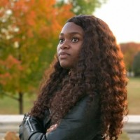- Chenelle was a Summer PIER Research Experiences for Undergraduate (REU) Scholar in the lab at Carnegie Mellon University. She graduated with a Major in Psychology and a Minor in African American Studies from University of Virginia.
- She was accepted into Hofsta University's Clinical Psychology Ph.D. Program in Long Island, NY.
- During her summer fellowship in Cassie's Army, Chenelle first-authored 1 talk and 2 conference posters: 2021 ISPD People’s Choice Poster Awardee.
Adrian Ma
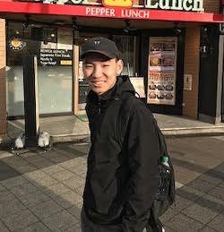- Adrian Ma graduated with a Dual Major in Cognitive Science and Human-Computer Interaction at Carnegie Mellon University.
- He is a Game Designer at KooApps, a mobile gaming company in Seattle, WA.
- Adrian was an RA in Cassie's Army for 3 years from 2020 until he graduated in 2023, was a $3500 Summer Undergraduate Research Fellowship Awardee, co-authored 1 conference symposium and first-authored 1 conference talk.
Maanasi Bulusu

- Maani graduated with a Major in Computational Neuroscience, a conentration in Neurobiology, and with Honors after completing the Dietrich College Senior Honors Program in the lab at Carnegie Mellon University.
- She is currently a Clinical Researcher at Brown University's Rhode Island Hospital/Warren Alpert Medical School in Providence, RI.
- Maani was an RA in Cassie's Army for 4 years from 2019 until she graduated in 2023, was a $2000 Small Undergraduate Research Crosswalk Funding Grant Awardee, co-authored 1 conference paper, 2 conference talks, and first-authored 3 posters: ABRCMS 2020 Presentation Awardee, CMU Conference Presentation Awardee.
Morgan Boyd

- Morgan graduated with a Major in Psychology, Learning & Development Concentration and a Minor in Creative Writing from Carnegie Mellon University.
- She was accepted into New York University's Developmental Psychology Ph.D. Program in NYC.
Eileen Lee

Adrian Mester

- Dual Major in Computer Science and Music Technology
- Github: @RedHippi
- Hobbies: Bird Watching in local parks, Playing Games with his parents
Suanna Moron

- Suanna graduated with a Dual Major in Computational Neuroscience and Psychology.
- She currently is the Research Coordinator at Stanford University's Educational Neuroscience Initiative Laboratory.
George Whitfield

Kristy Zhang

- Kristy graduated with a Dual Major in Business Administration and Human-Computer Interaction.
- She was accepted into the competitive Master of Human-Computer Interaction (MHCI) Graduate Program at Carnegie Mellon University and currently works as a UX Research Associate at Google in California.
Matthew Komar
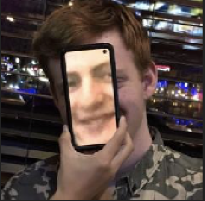Sebastian Yang

Marissa McAfee

- Marissa graduated with a Major in Chemistry
- She is commissioning as a Weather and Environmental Science Officer for the U.S. Airforce and was accepted into the Naval Postgraduate School's Meteorology and Operational Oceanography Program, earning a Master's degree in Meteorology and Physical Oceanography.
Kalpa Anjur

- Kalpa graduated with a Major in Computer Science and a Minor in Game Design.
- Github: @hitechlife
- She currently works as a Software Engineer at Salesforce.
Elizabeth Fulton

- Elizabeth graduated with a Dual Major in Computational Neuroscience and Technical Writing.
- She currently is a Content Stategist at PowerTrain, Inc. in St. Louis.
Emery Noll

- Emery graduated with a Dual Major in Biological Sciences and Pyschology.
- She was accepted into The Master of Science in Medical Sciences Program at Boston University on her journey to start Medical School.
Carter Williams

- Carter graduated with a Major in Logic and Computation and a Minor in Game Design.
- Website
- He currently is a Software Engineer at Giant Squid Studios, an industry-leading game developer company in Pittstburgh, PA.
Aria Tsegi-Moore
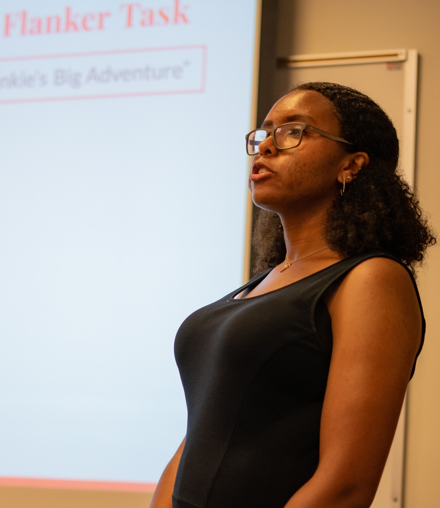- Aria was a visiting PIER Research Experiences for Undergraduate (REU) Scholar majoring in Psychology from Stony Brook University.
- She was accepted into Columbia University's Bridge to the Ph.D. Program in STEM.
Marie Shaw

- Marie graduated with a dual major in Electrical Computer Engineering and Human Computer Interaction with a minor in Integrative Design, Arts and Technology.
- Github: @mnshaw
- She currently works at YouTube in California.
Xavier Artache

- Xavier graduated with a dual major in Mechanical Engineering and Computer Science with a dual minor in Business and Robotics.
- Github: @xaxafour
- He currently works at the startup AutoX in California, which programs self-driving vehicles.
Nicole Ang

- Nicole graduated with a dual major in Statistics and Machine Learning and Information Systems.
- Github: @nicoleang
- She currently works at Amazon in Seattle as a Software Development Engineer.
Jonathan Epps

- Jonathan was a visiting PIER Research Experiences for Undergraduates (REU) Scholar majoring in Political Science from Morehouse College.
- He was accepted into The Fulbright U.S. Student Program in Brazil and is currently pursuing his Juris Doctor Degree at Yale Law School.
Nick Lee

- Nick graduated with a major in Electrical and Computer Engineering
- Github: @tabbyson
- He currently works as a Power Generator Engineer in Virginia.
Bridget Tan

- Bridget graduated with a major in Electrical and Computer Engineering and a minor in Sound Design
- Github: @bridget-tan
- She was accepted into Carnegie Mellon's Master's of Science Electrical and Computer Engineering Graduate Program and is currently working as a Software Engineer at The Johns Hopkins University Applied Physics Laboratory.